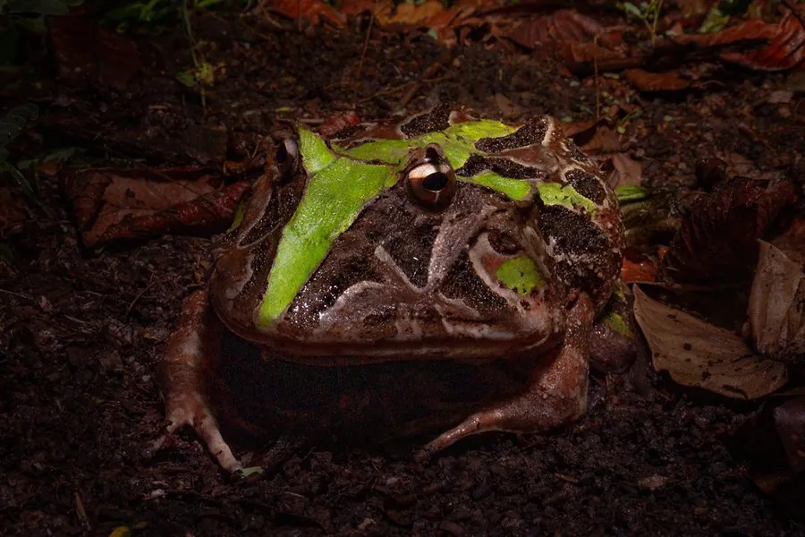

两栖动物 · 动物界
钟角蛙 Ceratophrys aurita

巴西东南部大西洋森林中的大型角蛙，眼上具三角形肉质“角”，口极大、性情凶猛，能吞下与自身体型相近的猎物。
- 分类
- 门脊索动物门纲两栖纲目无尾目科角蛙科属角蛙属
- 栖息环境
- 大西洋森林与季雨林的潮湿落叶层、溪流边缘与沼泽
- 地理分布
- 巴西东南部，从巴伊亚州南部至圣卡塔琳娜州一带
- 保护级别
- IUCN 无危（LC）；CITES 附录Ⅱ
物种志
钟角蛙体形宽扁肥硕，雌蛙体长可达 10–15 厘米，雄蛙约 7–10 厘米，是角蛙属中体型较大的种类。头部宽大，眼上方各有一片三角形肉质突起，形似小角，故称“角蛙”；口裂极宽，几乎横贯整个头部，上下颌具细齿状突起。体色多变，多为黄绿、橄榄绿或棕褐，背部有不规则深色斑块，腹部浅黄，皮肤布满小疣。
它们分布于巴西东南部的大西洋森林与季雨林，栖息于潮湿的落叶层、溪流边缘与沼泽，多静伏不动，靠体色伪装等待猎物靠近。食性极广且贪食，捕食昆虫、蚯蚓、蜘蛛、蛙类、蜥蜴、小鼠甚至小鸟，咬住后整只吞下，因代谢缓慢可数周不进食。繁殖期在雨季，雄蛙鸣声低沉，雌蛙产卵于静水中，蝌蚪为肉食性，会捕食同类。栖息地因森林砍伐与城市化而萎缩，宠物贸易也带来捕捉压力。
形态与习性
- 体长雌蛙约 10–15 cm，雄蛙约 7–10 cm
- 食性昆虫、蚯蚓、蜘蛛、蛙类、蜥蜴、小鼠与小鸟
- 繁殖雨季产卵于静水，蝌蚪肉食性，会捕食同类
- 角的构造眼上方三角形肉质突起，形似小角
- 耐饥能力代谢缓慢，饱食后可数周不进食
- 捕食方式静伏伪装，待猎物靠近后突然张口吞下
- 寿命约 10–15 年
趣味知识
- 钟角蛙的嘴几乎横贯整个脑袋，能一口吞下接近自己体长的猎物。
- 它平时一动不动趴着，靠体色和落叶混在一起等猎物送上门。
- 角蛙蝌蚪长着大嘴，会捕食同池的其他蝌蚪。